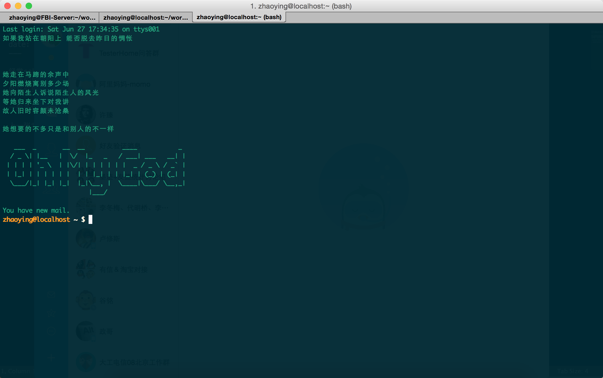

make your Terminal more interesting
经常ssh登录到公司的开发机上时，会看到一些比较有意思的welcome words，保守一点的一般是公司的名字，出格一点的那就不一定是显示什么了：-）我们自己平时在打开终端时，默认是没有这些有趣的东西的，不过没有没关系，可以自己设，方法非常简单，只需编辑/etc/下面的一个叫motd的文件即可，贴上喜欢的ASCII。
一般来说/etc/下面默认没有这个文件，新建一个即可，另外给大家推荐一个可以生成ASCII的网站：http://ascii.mastervb.net/
上一张我现在的终端界面吧

Have fun-:)